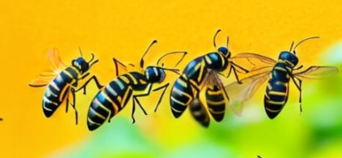
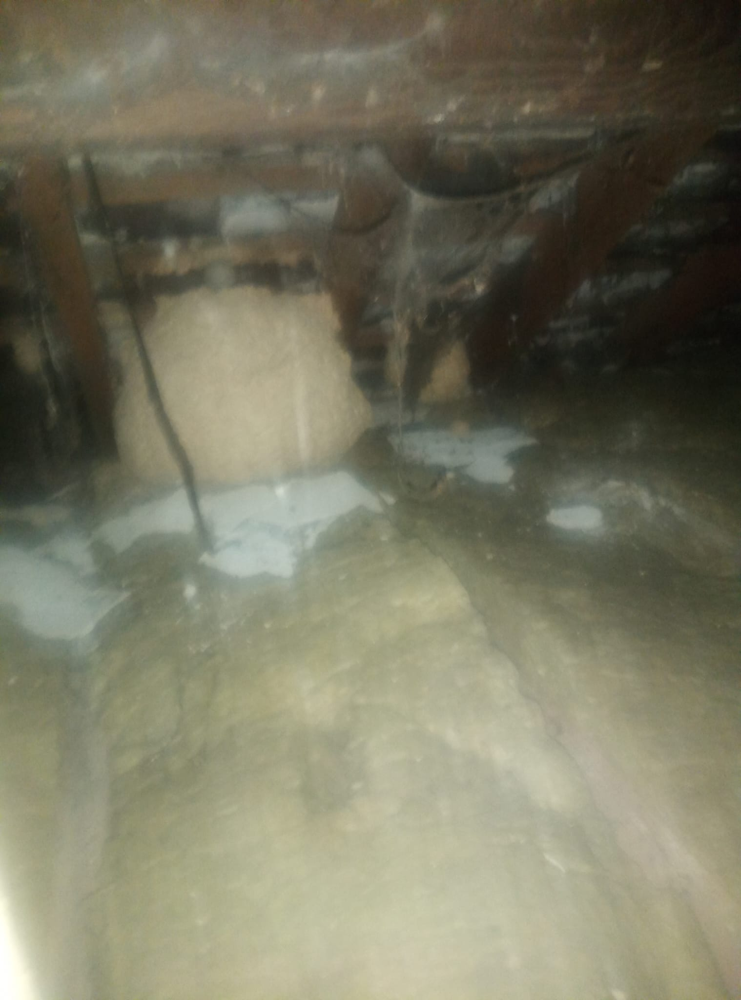

South Wales, Merthyr, Neath, Aberdare, Brecon, Swansea, Port Talbot, Pontardawe Valley, Neath Valley Wasp Nest Removal Services
Are you currently facing the challenges of a wasp infestation? Our dedicated wasp nest removal service in South Wales, Merthyr, Neath, Aberdare, Brecon, Swansea, Port Talbot, Pontardawe Valley, Neath Valley and the surrounding areas offers effective and efficient solutions tailored to eliminate these pests swiftly and safely. Wasps can be particularly aggressive when they feel threatened, making it essential to address any nests on your property promptly. Whether you are looking for reliable wasp control near me or require expert assistance with hornet nest removal, our team of trained professionals is fully equipped and ready to help you restore safety to your environment.
We specialize in a comprehensive range of services aimed at wasp management, including:
- Wasp Nest Removal - Our technicians are skilled in the quick and safe removal of wasp nests, minimizing disruption to your daily routine.
- Wasp Nest Disposal - We ensure that all removed wasp nests are disposed of in an environmentally responsible manner, adhering to local regulations.
- Eliminating Wasp Nests - We employ comprehensive strategies designed to eradicate wasps effectively, ensuring they do not return to your property.
- Wasp Exterminator Services - Our professional extermination services target wasp populations, using proven methods to ensure thorough results.
- Pest Management - We offer long-term solutions and advice on pest management practices to prevent future infestations and safeguard your home.
Why Choose Us?
Choosing our wasp removal services means prioritizing your safety and satisfaction. We understand the critical importance of protecting your home and family from the dangers posed by wasps. Our team utilizes the latest techniques and high-quality products to ensure effective results, while also taking care to minimize any impact on your property. We believe in providing our customers with peace of mind, knowing they have professionals handling their pest control needs.
Protect Your Property Today!
If you’re seeking reliable and professional wasp nest removal services, look no further! Contact us at 07375 303124 or reach out via email at Email Me. Our team is available for free consultations to discuss your pest control needs and develop a tailored solution for your situation. Don't let wasps disrupt your peace—let us help you reclaim your space!
Bees: Important Pollinators
While bees are essential for our ecosystem, they can sometimes be found in inconvenient places. It's important to note that bees cannot be killed unless under certain circumstances, as they play a crucial role in pollination and maintaining biodiversity. These incredible insects are responsible for pollinating a large portion of the food we consume, including fruits, vegetables, and nuts.
If you have a bee hive on your property, we offer safe hive relocation services to move the hive without harming the bees. Our trained professionals will assess the situation and ensure that the bees are safely relocated to a suitable environment. We understand that bees are vital to our environment, and our goal is to protect them while providing a solution that keeps your property safe and comfortable.
In addition to hive relocation, we also provide guidance on how to coexist with bees and prevent them from nesting in undesirable locations. For more information on bee relocation or if you require wasp removal services in neath or surrounding area, please contact us or visit our Bee Relocation page for detailed information on our services.
The Importance of Professional Wasp Control
Attempting to remove a wasp nest on your own can be dangerous. Our trained technicians use protective gear and follow safety protocols to safely eliminate the nest, minimizing the risk of stings and potential allergic reactions.
Let us handle your wasp problems efficiently. Contact us for professional wasp control services!
